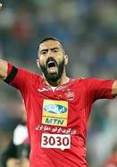

Mohsen Rabikhah Nodehi
Iranian footballer
Mohsen Rabikhah is an Iranian footballer who plays for Aluminium Arak in Persian Gulf Pro League as a defensive midfielder. Wikipedia
Born: December 24, 1987 (age 34 years), Tehran
Height: 1.79 m
Current team: Shahr Khodro F.C. (Defender)
Dates joined: 2020 (Aluminium Arak FC), 2016 (Persepolis F.C.)